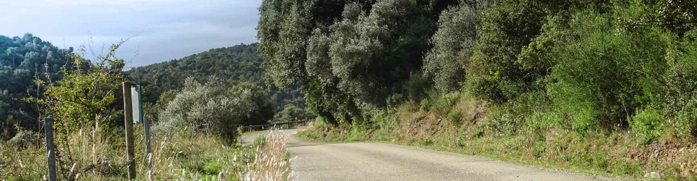

Ruta · Roses
Aquesta és la proposta més llarga i diversa en bicicleta gravel de les tres proposades des de Roses. La ruta recorre una gran àrea de l’Alt Empordà : puja cap al nord, per la plana, a través de…